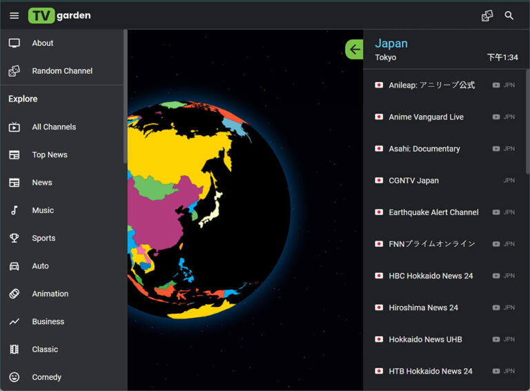

TV Garden 深度盘点：130 国频道、分类筛选、收藏与长观技巧全梳理
一款基于 IPTV-ORG 的全球直播频道聚合平台，覆盖 130+ 国家，轻量无账号依赖。从 3D 地球探索到国旗网格直达，从分类筛选到收藏边界，再到长时间观看的实用技巧，这篇盘点帮你把它的能力面彻底摸透。
它是什么，为什么值得认真盘点
TV Garden 是一个把全球广播电视资源聚合到一张 3D 地球上的轻量平台——数据源来自 IPTV-ORG 社区维护的 M3U 频道列表，覆盖 130 多个国家的本土直播频道。它不做版权内容，不提供点播，就是把散落在全球各地的公开信源整理到一起，让你能按国家、按分类去发现和观看。想看具体国家本土直播时到处搜到处试链接，要么死要么卡，而它的官网把这些信源集中在一个界面里，还提供了频道分类、收藏、搜索等基础工具。但它的设计哲学是"轻量第一"，很多功能的边界刻意做得很窄，理解这些边界才能用好它。
能力域一：全球频道发现——两种入口各有分工
发现频道的核心有两个入口：3D 地球和国旗卡片网格。
3D 地球更像探索模式——打开首页会看到一颗能旋转的地球，上面的色块代表有频道的国家。转到哪个国家、点上去就跳到该国频道列表。适合"我不知道要看哪个国家，先逛逛"的心态，转着转着可能就发现了某个你之前没想到的频道。
国旗卡片网格则是精准直达——地球下方有一个按国家英文名 A 到 Z 排序的卡片网格，每张卡片带国旗 emoji。比如想看法国频道，在搜索框打 "France" 就能瞬间定位，不会出现"转了十分钟就是找不到那块小色块"的挫败感。这个搜索框是即时过滤的，打 "United" 会剩下阿联酋、英国、美国三个，比在地球上瞎转高效太多。

两种入口配合使用：地球用来碰运气，卡片用来精准定位。国家页面本身也可以直接加书签，下次想看美国频道直接点书签就行。
能力域二：分类筛选——十大类型，从 News 到 Kids
进入某个国家的频道页面后，左上角有一个三横线汉堡菜单，展开就是频道类型的分类过滤。常见的分类包括 News（新闻台）、Sports（体育台）、Entertainment（娱乐综艺连续剧）、Music（音乐频道）、Kids（儿童卡通）、Movies（电影频道）、Religious（宗教频道）、Documentary（纪录片）、Public（公共电视）、Regional（地区性频道）。
选了分类之后，频道列表立即只显示该分类下的频道。比如美国频道有 50 多个，选 Sports 后会缩小到十来个体育台，找比赛频道时特别方便。分类筛选还能和频道状态过滤（当前在线/离线）以及搜索框叠加使用，三重过滤之后精准度很高。
但分类有一个先天限制——它的标签直接来自 IPTV-ORG M3U 里的分类字段，不是每个国家都有所有分类，小国可能只有 News 和 General 两种。而且标签的准确性完全取决于社区维护者有没有给每个频道正确打标签，有时候会遇到"体育台被归到 News 分类"的情况，这不是 TV Garden 的 bug，是源数据的问题。

能力域三：收藏夹——有，但边界要搞清楚
TV Garden 有收藏功能，但它的设计哲学是"轻量"，所以收藏夹的边界刻意做得很窄。
收藏数据只存在你当前浏览器的 localStorage 里。这意味着换浏览器（Chrome 换 Firefox）、换设备（PC 换手机）、清浏览器缓存时勾选了 Cookie 和网站数据，收藏夹就会归零。用隐身窗口的话更直接——关闭所有隐身窗口后浏览器自动清掉 localStorage，收藏白存。
同一份数据在不同设备之间不互通。你在 PC Chrome 里收藏了 10 个频道，用手机打开 TV Garden 会看到空的收藏夹。注册账号也不会同步收藏——账号系统目前只处理登录凭证，收藏数据还是各端独立。
如果你想在手机端看直播，从下载获取 Android APK 安装包就行，它的收藏存在自己的私有数据目录里，跟网站端完全隔离。APK 覆盖安装会保留收藏，但卸载重装就清空了。
还有一个容易忽略的点：收藏了不代表频道永远播得了。如果那个频道哪天下线了，收藏还在，但点进去播不了——这时候手动移除就行。
一句话总结：收藏等于当前浏览器会话的本地书签，不是云端同步的账户资产。理解了这个定位，就不会对"换浏览器收藏就没了"感到困惑。
能力域四：长时间观看——电源、锁屏、网络三件事
用 TV Garden 长时间看直播（一场球赛、一晚上新闻联播）时容易遇到三个坑：设备没电、网络掉了、屏幕超时黑屏。提前准备能省很多麻烦。
手机和平板端最稳的做法是插着充电器——看直播很耗电，满电看两小时球赛可能掉到 30%。关掉自动锁屏（Android 设永不，iPhone 也设永不），Cast 到电视时还能让手机当遥控器用。关掉后台下载、云同步、消息推送，Cast 尤其吃带宽，后台抢带宽会导致缓冲。Wi-Fi 比移动网络稳定，Cast 时确认 Cast 设备和手机连同一个 Wi-Fi。
电脑端主要是电源计划的问题——Windows 把屏幕关闭和进入睡眠时间设长，插电时永不睡眠最稳。笔记本合盖默认睡眠，Cast 或 HDMI 接电视的话合盖会断画面，要么在电源设置里改合盖动作为不做任何操作，要么架起来保持打开。
APK 特有一个坑：可能被系统内存管理杀掉。如果长时间播放突然断了，大概率是系统杀了 APP。解决方法是把 TV Garden 加到系统的电池优化白名单，或者在最近任务里锁定 APP。想了解更多进阶配置和参数细节，去tv garden文档翻一下会更清楚。
短板也要说
盘点了这么多功能，也要客观指出 TV Garden 的局限。
最明显的是收藏不同步——作为一个全球频道聚合平台，账号体系却只做登录不做数据同步，这对重度用户来说不太友好。第二个是分类标签的准确性依赖社区维护，有时会遇到标签打错、漏打的情况，筛选结果不完全可信。第三个是频道本身的稳定性，公开信源不保证长期在线，收藏夹里的频道过一阵子可能就播不了了，需要手动清理。
什么样的人该用它
综合上面的盘点，TV Garden 适合三类人。
第一类是体育迷——想看英超、西甲、NBA、F1 等全球赛事的本土直播信号，电视盒子里的 IPTV 列表经常过期失效，而 TV Garden 的源由 IPTV-ORG 社区持续维护，过期频道更新频率相对快。尤其是想看非英语赛事（比如日韩、东南亚足球）的观众，用国旗网格找到对应国家再分类到 Sports，精准度比盲搜好得多。
第二类是国际新闻观察者——想直接看各国本土新闻台的直播而不是中文媒体的二次剪辑，比如想看 BBC 的纯英文新闻、想看法国本土频道的中文报道（有些法国频道有华语时段）、想了解东南亚电视市场的节目风格。TV Garden 把这些散在全球的信源集中到一个界面里，比去一个个搜频道高效太多。
第三类是外语学习爱好者——沉浸式语言环境对口语提升的效果远好于教材和 APP。把 TV Garden 设成某个外语频道的直播，做饭、收拾房间时挂在一边当背景音，语感不知不觉就积累起来了。Kids 分类下的儿童频道语速慢、用词简单，特别适合入门阶段练听力。